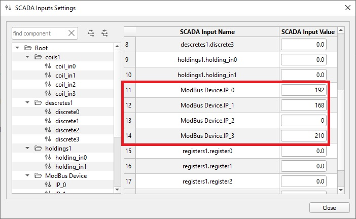
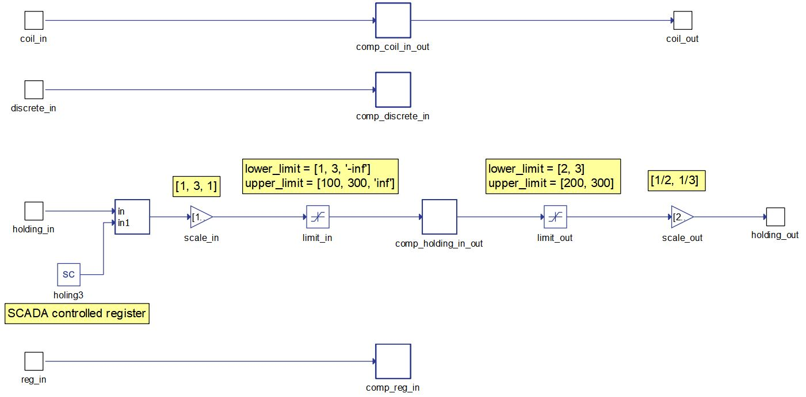
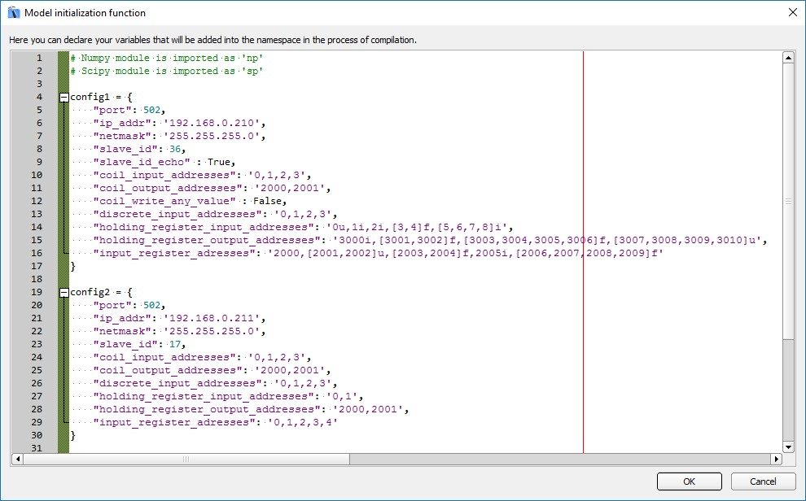
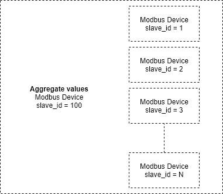
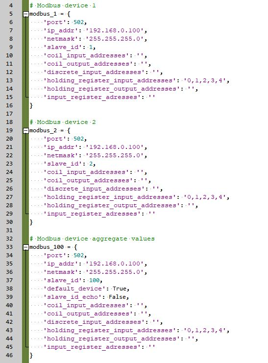

Modbus Device
Description of the Modbus Device component in Schematic Editor.
Introduction to Modbus protocol
Modbus is an industrial serial communication protocol standard that has been in use for many years. The protocol defines function codes and an encoding scheme for transferring data mostly as either single points (1-bit) or as 16-bit data registers. Besides basic 16-bit registers Typhoon HIL Modbus Client supports reading and writing both 32-bit and 64-bit registers. This basic data packet is then encapsulated according to the protocol specifications for Modbus ASCII, RTU, or TCP. Modbus/TCP protocol is implemented in the Typhoon HIL toolchain.
Modbus is defined as a master/slave protocol, meaning a device operating as master will poll one or more devices operating as a slave. This means a slave device cannot willingly send information, it must wait to be asked for it. The master will write and read data to a slave device’s registers.
Modbus/TCP makes the definition of master and slave less obvious because Ethernet allows peer to peer communication. The definition of client and server are better known entities in Ethernet based networking. In this context, the slave becomes the server and the master becomes the client.
Four types of registers are defined in Modbus protocol and they are listed in Table 1.
| Register type | Access | Size |
|---|---|---|
| Coil (Discrete output) | read/write | 1 bit |
| Discrete input | read only | 1 bit |
| Input registers | read only | 16 bits |
| Holding registers | read/write | 16 bits |
Modbus protocol defines a set of functions that can be performed on registers. Functions that are supported in the Typhoon HIL toolchain are listed in Table 2.
| Function type | Function name | |
|---|---|---|
| Data Access | 1-bit access | Read Discrete Inputs |
| Read Coils | ||
| Write Single Coil | ||
| Write Multiple Coils | ||
| 16-bit access | Read Input Registers | |
| Read Holding Registers | ||
| Write Single Holding Registers | ||
| Write Multiple Holding Registers | ||
| Read/Write Multiple Registers | ||
| 16 - 64 bit access | Read Input Registers Advanced | |
| Read Holding Registers Advanced | ||
| Write Registers Advanced | ||
Modbus protocol is supported by the following Typhoon HIL devices: HIL402, HIL101, HIL404, HIL602+, HIL604, HIL506, and HIL606.
Modbus Device Component
The Modbus Device component, which can be found under the Communication tab, implements Modbus TCP Server (Slave) functionality. In the Component Dialog window, different properties are defined.

The properties for the Modbus Device component are divided into four sections (tabs) : General, Network settings, Advanced, and Faults Tab.
General Tab
Through the Modbus configuration property, all aspects of the protocol can be defined. This property is defined through the name-space, usually in the Model/Model Initialization window. Configuration is defined in the form of a Python dictionary with fields defined in Table 3.
Execution rate is the Signal Processing execution rate and should be compatible with the rest of the schematic.
Network settings Tab
The Ethernet port property defines which ethernet port on the back of the HIL device will be used by the Modbus Server application. For 4th generation devices (HIL101, HIL404, HIL506, and HIL606), any available port can be used for communication, while older devices only support communication over port 1.
Network settings can be defined through the Configuration dictionary, Dialog window or through SCADA.
By default the Network settings are taken from the Configuration dictionary. The dictionary fields corresponding to each parameter are described in the Table 3.
Defining Network settings through the Dialog window is useful if there are multiple Modbus Servers with the same register maps but different IP addresses. Instead of creating duplicate configurations, you can define one and change the Network settings in all components separately. Defining Network settings in this manner also allows for changing the parameters using Schematic API.
Defining Network settings through SCADA is useful if you are not sure what IPs are taken on the network. Instead of changing the settings and recompiling the model, you can change the parameters in SCADA before the simulation starts. Selecting SCADA as a parameter source will create SCADA Input components that can be accessed throug the SCADA window. This is illustrated in Figure 2.

It is important to mention that the parameters can be changed at any time during the simulation, but the values will be applied only when the simulation is started. Changing the parameters during the simulation will not have an effect on the current simulation. The only parameter that can be modified at any time is the Slave ID.
Defining Network settings in this manner also allows for changing the parameters using HIL API.
Advanced Tab
If the Enable pipeline property is selected, Modbus Server can receive multiple client requests even if it has not yet processed the previous one. If pipelining is disabled, the Modbus Server will listen for new requests only after the current request has been handled.
If the Show IP address port property is selected, a new port called ip_addr will appear on the component through which the Modbus IP address is passed to the simulation. This is convenient to show the IP address of the Modbus server when the dynamic IP allocation option is enabled in configuration or to check if the Modbus server is started. The value is a vector of length 4 where the values in the form [192, 168, 0, 150] for the ip '192.168.0.150'.
The ip_addr port can also be used to confirm that the Modbus server is up and running.
The Show request counter port(s) property can help user track different requests coming from the Client. By choosing Read counter port, Read counter port (separate), Write counter port, Write counter port (separate), Both counter ports, Both counter ports (separate) or Function code counter port, additional ports are created on the component called read_cnt, write_cnt or fnc_code_cnt. Using these ports, you can know the number of read/write requests that the Server has received from the Client. This is useful in cases when the simulation needs to know if the communication link is alive.
The difference between Read counter port and Read counter port (separate) is how the read requests are counted. Both property values will create a read_cnt, but dimension of that port will be different, depending on the property value. If the Read counter port is selected, the port will have dimension 1 and all read requests will be counted together, that is, the counter value will increase by one each time a read request is received. If the Read counter port (separate) is selected, read_cnt port will have dimension 4 and read request for each register type will be counted separately. read_cnt[0] will count read Coil requests, read_cnt[1] will count read Discrete requests, read_cnt[2] reads Holding and read_cnt[3] reads Input registers requests. The same applies for Write counter port and Write counter port (separate) property values. Only difference is that the write_cnt will have dimension 2 for Write counter port (separate), where write_cnt[0] counts the writes to Coil registers and write_cnt[1] counts the writes to Holding registers.
- fnc_code_cnt[0] - 0x01 Read Coils
- fnc_code_cnt[1] - 0x02 Read Discrete Inputs
- fnc_code_cnt[2] - 0x03 Read Holding Registers
- fnc_code_cnt[3] - 0x04 Read Input Registers
- fnc_code_cnt[4] - 0x05 Write Single Coil
- fnc_code_cnt[5] - 0x06 Write Single Register
- fnc_code_cnt[6] - 0x0F Write Multiple Coils
- fnc_code_cnt[7] - 0x10 Write Multiple Registers
- fnc_code_cnt[8] - 0x17 Read/Write Multiple Registers
Faults Tab
Two types of communication faults can be simulated in the Modbus Server component.
The Message delay fault injects a delay in the Server's response to the Client. When the Server receives a request it will wait for a given amount of time before sending the response. The value of the Message delay property can be either Model or SCADA. If Model is selected, a new terminal msg_delay will be created on the component so that an external signal can be connected. If the SCADA value is selected, a SCADA Input component, with the name Message delay will be created inside the Server component and you can change this value through the SCADA window once the simulation is running. The delay value is specified in seconds with a resolution of 1 us. The valid range is between 0 and 1800 seconds.
If the Connection loss fault is active, all opened connections to the Server will be closed and no new requests will be accepted during the time the fault is active. Once the fault is cleared, the Server can accept new connections. The value of the Connection loss property can be either Model or SCADA. If Model is selected, a new terminal conn_loss will be created on the component so that an external signal can be connected. If the SCADA value is selected, a SCADA Input component, with the name Connection loss will be created inside the Server component and you can change this value through the SCADA window once the simulation is running. The valid values are 0 for no fault and 1 for active fault.
Modbus Configuration
The Modbus Device configuration is defined as a Python dictionary with predefined fields. The dictionary is usually defined in the Namespace, either through a Model Initialization script or through the component mask.
- Network parameters - through these fields, values such as IP address, Netmask, Port, Gateway, etc. are defined
- Register map - through these fields register addresses, types, values, etc. are defined. Two versions of register maps can be used. Version 1 is a simpler version with less features where as in Version 2, features like min, max and scale values can be defined for each register. These versions are explained in Register Map Version 1 and Register Map Version 2.
- Additional parameters - used to define some additional settings
Detailed information about each parameter is described in the Table 3:
| Group (Location) | Parameter | M/O* | Description |
|---|---|---|---|
| Network Parameters (Network settings Tab) | ip_address | M |
Device IP address (network dependent). IP address can be defined as static (ex. '192.168.0.50') or it can be defined as dynamic (ex. 'dynamic:50'). If the IP is defined as dynamic, the Modbus application will try to find the first free IP address on the network and use that address. It does that by simple pinging on the network until it does not get the response. The number 50 in 'dynamic:50' indicates that the pinging will start from 192.168.0.50 address (or more precisely xxx.xxx.xxx.50, where first three segments of the IP indicate the network domain). |
| port | M | Communication port number (default 502 for Modbus protocol) | |
| netmask | M | Subnet mask (network dependent) | |
| slave_id | M | Slave identification number | |
| gateway | O |
Specify the network gateway. The gateway can be defined in two ways: a) in format xxx.xxx.xxx.xxx or b) as a Linux route system command. If a) option is used, the route command is formed automatically in the form: route add -net <specified IP in the form xxx.xxx.xxx.0> netmask <specified netmask> gw <specified gateway> For example, if the IP is 192.168.0.210, netmask is 255.255.255.0 and gateway is 192.168.0.100, the route command will be: route add -net 192.168.0.0 netmask 255.255.255.0 gw 192.168.0.100 The b) option lets you explicitly form the route command like in the example above. If option a) is used, the IP address cannot be defined as dynamic. |
|
| Register Map V1 (Model Initialization Panel) | coil_input_addresses | M | List of Coil input addresses |
| coil_output_addresses | M | List of Coil output addresses | |
| discrete_input_addresses | M | List of Discrete Input addresses | |
| holding_register_input_addresses | M | List of Holding Register input addresses | |
| holding_register_output_addresses | M | List of Holding Register output addresses | |
| input_register_addresses | M | List of Input Register addresses | |
| coil_output_init | O | List of initial values for coil output registers | |
| holding_register_output_init | O | List of initial values for holding output registers | |
| Register Map V2 (Model Initialization Panel) | coil_registers | M | Coil register definitions |
| discrete_registers | M | Discrete register definitions | |
| holding_registers | M | Holding register definitions | |
| input_registers | M | Input register definitions | |
| Additional Parameters (Model Initialization Panel) | slave_id_echo | O | If True, sets the slave id value to be echoed back. Otherwise, the slave id is defined by slave_id (default value is True). |
| coil_write_any_value | O | If False, only the value of 0xFF00 is represented as logical 1. If True, all nonzero values are represented as logical 1 (default value is False) | |
| default_device | O | Used in configuration where messages are filtered using slave ID. If the received slave ID does not mach any device in the model, values form "default_device" will be returned to the Client. Values are True/False. More details in Filtering Modbus messages using slave ID values. | |
| unimplemented_register_exception | O | If value is set to True, Modbus server will return exception when accessing unimplemented registers. If the value is False, the server will return 0 for unimplemented 1bit registers and -1 (65535) for unimplemented 16bit registers. Default value is False. |
Register Map Version 1
Register Map Version 1 refers to an older method of defining register maps. In this method, registers are defined in a string form where user defines the register address(es) and type(s).
Also, in this method, Coil and Holding registers are split into two parts, input and output. Reading the register value from the Client will sample the signal connected to the input of the Modbus Device component and writing the value to the register will update the output of the component. This means that the input and output register cannot have the same register address since the change on the input will automatically change the output value which is not desired.
Defining the addresses for Coil and Discrete registers
Coil and Discrete registers are defined simply by a list of address values (between 0 and 65535) as shown below:
"coil_input_addresses": "0, 1, 2, 3, 4" "coil_output_addresses": "100, 101, 102, 103, 104" "discrete_input_registers": "0, 1, 2, 3, 4"
Defining the addresses for Holding and Input registers
Although the Input and Holding registers are 16-bit long (as defined by the Modbus protocol), multiple registers can be grouped together to represent 32- and 64-bit registers of different type. Registers can be defined as shown in Table 4.
| Register in group | Register type | Address value |
|---|---|---|
| 1 (16 bit) |
unsigned integer integer |
Any positive integer value (between 0 and 65535) |
| 2 (32 bit) |
unsigned integer integer floating point |
Any array of 2 consecutive integer values (between 0 and 65535) |
| 4 (64 bit) |
unsigned integer integer floating point |
Any array of 4 consecutive integer values (between 0 and 65535) |
To illustrate what this looks in Typhoon HIL Control Center, the different configuration of Input Registers is shown below:
- All registers are 16-bit width of various
types:
"input_register_adresses": '0, 1, 2i, 3u, 4i, 5, 6, 7u'
- All registers are 32-bit width of various
types:
"input_register_adresses": '[0,1]u, [2,3], [4,5]f, [6,7]i, [8,9]i, [10,11]f''
- All registers are 64-bit width of various
types:
"input_register_adresses": '[0,1,2,3]f, [4,5,6,7]u, [8,9,10,11]i, [12,13,14,15]'
- Registers are of various lengths and types:
"input_register_adresses": '[0,1]f, 2u, 3i, [4,5,6,7]f, 8, [9,10]i, [11,12,13,14]u'
To specify the length of the register, just group appropriate number of addresses in square brackets.
To specify the type of register, write u (for unsigned integer), i (for integer) or f (for floating point) after the address value. If the type is not specified explicitly, register will be defined as unsigned integer. If the register is 16- or 32-bit, the type must be specified after the closing bracket.
A register of 16-bit length cannot be defined as floating point.
Defining the register Endianness
Different devices require different register Endianness. Little Endian defines that the least significant word is stored first in the memory, and Big Endian defines that the most significant word is first stored in the memory. For example, if you define the 32bit unsigned register as [0,1]u, and writes the value 0xBBBB AAAA to that register, the value will be stored as:
Little Endian: 0 → 0xAAAA; 1 → 0xBBBB
Big Endian: 0 → 0xBBBB; 1 → 0xAAAA
By default, in Typhoon HIL, registers are defined as Big Endian.
To define the register to be Little Endian, instead of [0,1]u, user can rearrange the address order to [1,0]u. This way, the most significant word will be stored on address 3 and least significant word will be stored on address 0, thus achieving the Little Endian configuration. The same applies for 64 bit registers.
Defining the registers initial values
Initial values can be specified for coil and holding output registers as a list of values. If initial values are not specified, registers will be initialized with values of 0.
Values for coil output registers can be specified as integer values or as True/False values. Every integer value that is not equal to 0 is represented as ON and value of 0 is represented as OFF state. For example, if coil outputs are defined with "0, 1, 2, 3, 4, 5" addresses, the initial values can be defined as [0, True, 0, 1, -56, 65] which corresponds to [OFF, ON, OFF, ON, ON, ON] states.
Number of initial values for coil output registers must match the number of addresses specified.
Values for holding output registers can be specified as values in specified range where register definition defines that range. For example, if the register is defined as 32bit unsigned register ([0,1]u), the specified value must be in range 0 - 232-1.
Example of holding output register initialization for addresses "0i, [1,2]u, [3,4,5,6]f" can be [-65, 1244, -0.235]. It is important to emphasize that number of initialization values are the same as number of address groups, and not the number of addresses.
Example of Register Map Version 1
Example of a Modbus device configuration with 5 Coils_in, 5 Coils_out, 5 Discrete Inputs, 8 Holding_in, 8 Holding_out and 8 Input Registers is shown below.
"coil_input_addresses": "0, 1, 2, 3, 4", "coil_output_addresses": "100, 101, 102, 103, 104", "discrete_input_addresses": "0, 1, 2, 3, 4", "holding_register_input_addresses": "0u, 1i, \ [2,3]u, [4,5]i, [6,7]f, \ [8,9,10,11]u, [12,13,14,15]i, [16,17,18,19]f" "holding_register_output_addresses": "100u, 101i, \ [102,103]u, [104,105]i, [106,107]f, \ [108,109,110,111]u, [112,113,114,115]i, [116,117,118,119]f", "input_register_addresses": "0u, 1i, \ [2,3]u, [4,5]i, [6,7]f, \ [8,9,10,11]u, [12,13,14,15]i, [16,17,18,19]f", "coil_output_init": [1, 0, 234, -121, False], "holding_register_output_init": [11, -12, 13, -6554, 121.98, 456696, 9998424, -564.112]
Register Map Version 2
Register Map Version 2 refers to a newer method of defining register maps. In this method, registers are defined in a python list where each register is defined as a dictionary.
In comparison to Version 1, this version introduces the possibility to define more parameters for register and allow input and output registers to have the same address value.
An example of a register map is illustrated below:
"coil_registers": [ {"addr": 0, "io_type": "in", "val_spec": "scada", "init_val": False}, {"addr": 1}, {"addr": 2, "io_type": "inout", "init_val": True} ]
Different register types have different fields that can be defined, but only addr field is mandatory. The table below lists all the parameters for each register type. The description of each field is defined in Table 5.
| Register type | Field name | M/O | Allowed values | Default value |
|---|---|---|---|---|
| Coil registers | addr | M | integer number between 0 and 65535 | |
| name | O | ASCII string | "coilX" | |
| io_type | O | "in", "out", "inout" | "in" | |
| val_spec | O | "model", "scada", "const" | "model" | |
| init_val | O | any value that can be converted to Boolean type | False | |
| Discrete registers | addr | M | integer number between 0 and 65535 | / |
| name | O | ASCII string | "discreteX | |
| io_type | O | "in" | "in" | |
| val_spec | O | "model", "scada", "const" | "model" | |
| init_val | O | any value that can be converted to Boolean type | False | |
| Holding registers | addr | M | integer number between 0 and 65535 or a list of numbers | |
| name | O | ASCII string | "holdingX" | |
| length | O | 1, 2, 4 | 1 | |
| data_type | O | "int", "uint", "float" | "int" | |
| word_order | O | "BE", "LE" | "BE" | |
| io_type | O | "in", "out", "inout" | "in" | |
| val_spec | O | "model", "scada", "const" | "model" | |
| init_val | O | int, uint or float value | False | |
| min | O | int, uint or float value | None | |
| max | O | int, uint or float value | None | |
| scale | O | int, uint or float value | 1 | |
| Input registers | addr | M | integer number between 0 and 65535 or a list of numbers | |
| name | O | ASCII string | "holdingX" | |
| length | O | 1, 2, 4 | 1 | |
| data_type | O | "int", "uint", "float" | "int" | |
| word_order | O | "BE", "LE" | "BE" | |
| io_type | O | "in" | "in" | |
| val_spec | O | "model", "scada", "const" | "model" | |
| init_val | O | int, uint or float value | False | |
| min | O | int, uint or float value | None | |
| max | O | int, uint or float value | None | |
| scale | O | int, uint or float value | 1 |
- addr - Register address
- Coils and Discrete registers - address is defined as an integer value
- Holding and Input registers - address can be defined as an integer value or as a list of values. If the value is an integer, register length is defined by the length parameter. If the value is a list, number of elements in the list defines the register length (ex. [0, 1, 2, 3] defines a 64 bit register)
- name - Register name. The name has a practical use only if val_spec is defined as scada. In this case, the value defines the name that will be shown in SCADA window
- length - Register length
- Holding and Input registers - this value of 1, 2 or 4 defines if register will be 16, 32 or 64 bit respectively.
- data_type - Register data type
- Holding and Input registers - this parameter defines if the register stores the integer, unsigned integer or floating point value
- word_order - Register word order
- Holding and Input registers - this parameter defines if the
value is stored in Little Endian or Big Endian format.
Little Endian define that the least significant word is stored first in the memory, and Big Endian define that the most significant word is the first stored in the memory. For example, if the user defined 32bit unsigned register as [0,1]u, and writes the value 0xBBBB AAAA to that register, the value will be stored as:
Little Endian: 0 → 0xAAAA; 1 → 0xBBBB
Big Endian: 0 → 0xBBBB; 1 → 0xAAAA
- Holding and Input registers - this parameter defines if the
value is stored in Little Endian or Big Endian format.
- io_type - Register input/output type.
- Discrete and Input registers - these registers can be defined only as input registers. This means that a signal from the model can be connected to the input terminal of the Modbus Device component in order to control the register value.
- Coil and Holding registers - these registers can be defined as input, output or in/out registers. Input defines that the input signal is used to control the register value and output means that the register value is available on the output terminal of the component. If the register is defined as in/out, this means that the value can be controlled using signal from the model connected on the input, but the value can be changed using Modbus Client also. In order for this concept to function, the register value is updated on event, if the input signal changes its value or when a Client request is received. With registers defined as input, the value is continuously updated.
- val_spec - This parameter defines how the register value is specified. Model defines that the value is controlled using a signal from the model. This value adds an input, output or both on the component (depending on the io_type). Scada defines that the value is controlled using SCADA Input component. This component is automatically created and its value can be controlled from SCADA window. Const defines that the register has a constant value and cannot be changed from the simulation.
- init_val - Initial value of the Register. The initial value can be defined if a register is defined as in or in/out or if it is defined to be SCADA controlled or a constant.
- min - Limitation of the register value. Lower limit of the register value can be defined using min parameter. This limitation is applied to the signals coming to and from the Modbus component. In other words, if the limitation is set to -1 and a client writes -5, the value of the register will be -5, but the output of the component will be limited to -1.
- max - Limitation of the register value. Upper limit of the register value can be defined using max parameter. This limitation is applied to the signals coming to and from the Modbus component. In other words, if the limitation is set to 5 and a client writes 10, the value of the register will be 10, but the output of the component will be limited to 5.
- scale - Scaling of the register value. Scaling value is applied differently for input and output registers. For input registers, input signal is multiplied with scale value and written to the register value. For output registers, register value is divided by the scale value and sent to the output of the component.
Example of Register Map Version 2
Example of a Modbus device configuration with 10 Coils, 5 Discrete Inputs, 16 Holding, and 8 Input Registers is shown below.
"coil_registers": [ {"addr": 0, "io_type": "in"}, {"addr": 1, "io_type": "in"}, {"addr": 2, "io_type": "in"}, {"addr": 3, "io_type": "in"}, {"addr": 4, "io_type": "in"}, {"addr": 100, "io_type": "out", "init_val": 1}, {"addr": 101, "io_type": "out", "init_val": 0}, {"addr": 102, "io_type": "out", "init_val": 234}, {"addr": 103, "io_type": "out", "init_val": -121}, {"addr": 104, "io_type": "out", "init_val": False}, ], "discrete_registers": [ {"addr": 0}, {"addr": 1}, {"addr": 2}, {"addr": 3}, {"addr": 4}, ] "holding_registers": [ {"addr": 0, "length": 1, "data_type": "uint", "io_type": "in"}, {"addr": 1, "length": 1, "data_type": "int", "io_type": "in"}, {"addr": 2, "length": 2, "data_type": "uint", "io_type": "in"}, {"addr": 4, "length": 2, "data_type": "int", "io_type": "in"}, {"addr": 6, "length": 2, "data_type": "float", "io_type": "in"}, {"addr": 8, "length": 4, "data_type": "uint", "io_type": "in"}, {"addr": 12, "length": 4, "data_type": "int", "io_type": "in"}, {"addr": 16, "length": 4, "data_type": "float", "io_type": "in"}, {"addr": 100, "length": 1, "data_type": "uint", "io_type": "out", "init_val": 11}, {"addr": 101, "length": 1, "data_type": "int", "io_type": "out", "init_val": -12}, {"addr": 102, "length": 2, "data_type": "uint", "io_type": "out", "init_val": 13}, {"addr": 104, "length": 2, "data_type": "int", "io_type": "out", "init_val": -6554}, {"addr": 106, "length": 2, "data_type": "float", "io_type": "out", "init_val": 121.98}, {"addr": 108, "length": 4, "data_type": "uint", "io_type": "out", "init_val": 456696}, {"addr": 112, "length": 4, "data_type": "int", "io_type": "out", "init_val": 9998424}, {"addr": 116, "length": 4, "data_type": "float", "io_type": "out", "init_val": -564.112}, ] "input_registers": [ {"addr": 0, "length": 1, "data_type": "uint"}, {"addr": 1, "length": 1, "data_type": "int"}, {"addr": 2, "length": 2, "data_type": "uint"}, {"addr": 4, "length": 2, "data_type": "int"}, {"addr": 6, "length": 2, "data_type": "float"}, {"addr": 8, "length": 4, "data_type": "uint"}, {"addr": 12, "length": 4, "data_type": "int"}, {"addr": 16, "length": 4, "data_type": "float"}, ]
Backward compatibility
The Register Map Version 2 can also support the Version 1 configuration if there is a need for it. The code below illustrates this.
"coil_registers": { "coil_input_addresses": "0, 1, 2, 3, 4", "coil_output_addresses": "100, 101, 102, 103, 104", "coil_output_init": [1, 0, 234, -121, False] } "discrete_registers": { "discrete_input_addresses": "0, 1, 2, 3, 4" } "holding_registers": { "holding_register_input_addresses": "0u, 1i, \ [2,3]u, [4,5]i, [6,7]f, \ [8,9,10,11]u, [12,13,14,15]i, [16,17,18,19]f", "holding_register_output_addresses": "100u, 101i, \ [102,103]u, [104,105]i, [106,107]f, \ [108,109,110,111]u, [112,113,114,115]i, [116,117,118,119]f", "holding_register_output_init": [11, -12, 13, -6554, 121.98, 456696, 9998424, -564.112] } "input_registers": { "input_register_addresses": "0u, 1i, \ [2,3]u, [4,5]i, [6,7]f, \ [8,9,10,11]u, [12,13,14,15]i, [16,17,18,19]f", }
Modbus configuration examples
Example of complete Modbus configuration using Register Map Version 1 is illustrated below.
configuration = {
"ip_addr": "192.168.0.100",
"netmask": "255.255.255.0",
"port": 502,
"slave_id": 17,
"slave_id_echo": False,
"unimplemented_register_exception": True,
"coil_input_addresses": "0",
"coil_output_addresses": "100",
"discrete_input_addresses": "0",
"holding_register_input_addresses": "0",
"holding_register_output_addresses": "100",
"input_register_addresses": "0"
}
Example of complete Modbus configuration using Register Map Version 2 is illustrated below.
configuration = {
"ip_addr": "192.168.0.100",
"netmask": "255.255.255.0",
"port": 502,
"slave_id": 17,
"slave_id_echo": False,
"unimplemented_register_exception": True,
"coil_registers": [
{"addr": 0},
{"addr": 100, "io_type": "out"}
],
"discrete_registers": [
{"addr": 0}
],
"holding_registers": [
{"addr": 0},
{"addr": 100, "io_type": "out"}
],
"input_registers": [
{"addr": 0}
]
}
Modbus device under the hood
In order to better understand the Modbus Device component and how the configuration affects the component structure the following Register Map will be considered:
"coil_registers": [], "discrete_registers": [], "holding_registers": [ {"addr": 0, "name": "holding0", io_type: "in", "val_spec": "model", "min": 1, "max": 100, "scale": 1}, {"addr": 1, "name": "holding1", io_type: "out", "val_spec": "model", "min": 2, "max": 200, "scale": 2}, {"addr": 2, "name": "holding2", io_type: "inout", "val_spec": "model", "min": 3, "max": 300, "scale": 3}, {"addr": 3, "name": "holding3", io_type: "in", "val_spec": "scada", "min": None, "max": None, "scale": 1}, {"addr": 4, "name": "holding4", "val_spec": "const"}, ], "input_registers" []
The inside of the Modbus component is shown in Figure 3.

Since there are no Coil, Discrete and Input registers defined, there is nothing generated for these registers. Input and output signal dimensions are 0.
For the Holding registers, appropriate SCADA Input, Gain and Limit components are generated. SCADA Input components are generated for all the registers that are defined with scada val spec parameter (in this case holding3 register). Input scaling is performed on all in and inout registers, as well as limiting. The same is for the out and inout registers, the only difference is that the scale value is changed accordingly.
Registers defined as const do not alter the structure of the Modbus Device component in any way.
Multiple Modbus device definition
In Typhoon HIL Control Center, multiple instances of Modbus devices can be present in the model. Every instance is represented as a different device and must have its own configuration defined. The configuration definition is the same as for a single Modbus device.
If multiple instances of a Modbus device are used, all devices must have different IP addresses (Figure 4). Values of IP addresses can be arbitrary as long as they are unique and belong to the same network (first three bytes are defined by the network and only last byte can be changed).

Filtering Modbus messages using slave ID values
Some Modbus site configurations require multiple devices to have the same register map and IP address. In this case, the slave ID is used to route a message to the appropriate device. One example of this is illustrated in Figure 5. Multiple devices are present in the model and all have the same register map. If the request message from the Client has a slave ID value of 1, 2, 3, …, the specific device is targeted and its values are reported to the Client. If the slave ID is 100, an aggregated value of all devices is reported to the server.

To achieve this configuration, the configuration must be defined for each device (including the aggregated value of all devices, as it behaves as a separate device) to ensure that the IP address of all devices are the same, while the slave_id values are different, as shown in Figure 6.

One of the devices in the setup can be defined as a "default device". In this case, if the slave ID received from the Client does not mach any value from other devices, the value from the default device will be reported back. In Figure 6, the aggregate device is defined as the default. If none of the devices is defined as the default, the values from last accessed device will be reported back.
It can also be useful to disable slave ID echo in the device configuration for these cases. By default, this option is enabled, meaning that the value of slave ID defined in the Client's request will be returned back. If it is disabled, the true value of the slave ID for that device will be returned. In other words, if the Client sends slave ID 5, but only 3 devices are implemented like in the example configuration, a value of 5 will be reported back even though the device 100 is reporting back its values. If slave ID echo is disabled, the ID 100 will be returned, and the Client will know which device reported the values.
Modbus Device component limitations
It is important to mention that although the support of 64 bit register manipulation is supported with the Modbus protocol, all registers in the HIL devices are 32 bit long so the received and sending data will be converted to 32 bit values.
Time synchronization
If there is a need for time synchronization, please take a look at Time synchronization.
Virtual HIL support
Virtual HIL currently does not support this protocol. When using a non-real-time environment (e.g. when running the model on a local computer), inputs to this component will be discarded and outputs from this component will be zeroed.